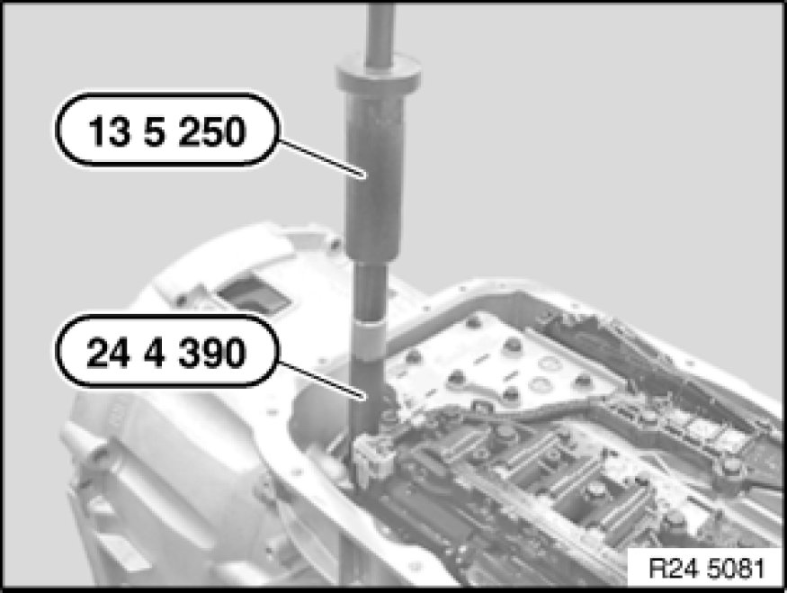
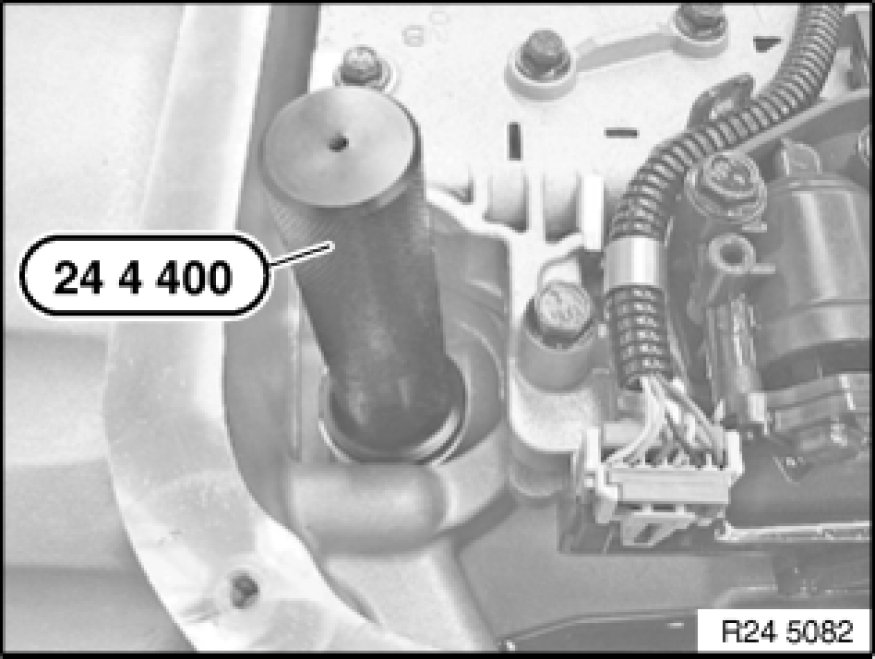

Removing and Installing/Replacing Transmission Oil Filter Gasket (GA6L45R)
24 11 666 - Removing and installing/replacing transmission oil filter gasket (GA6L45R)

Special tools required:
- 13 5 250
- 24 4 390 24 4 390 Extractor
- 24 4 400 24 4 400 Drift

Important!
After completion of work, check gear oil level Procedures.
Use only approved transmission oil.
Failure to comply with this instruction will result in serious damage to the transmission.

Necessary preliminary tasks:
- Remove transmission oil filter Removing and Installing/Replacing Transmission Oil Filter (GA6L45R)

Pull transmission oil filter gasket out of housing with special tools 24 4 390 24 4 390 Extractor and 13 5 250.

Drive transmission filter gasket into housing with special tool 24 4 400 24 4 400 Drift.